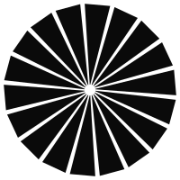

Hover the wordmark.
WRLD's visual system is dark/light-mode monochromatic. Accents live in the interaction layer — a hover glow on the wordmark, a focus ring on a CTA, a gradient sweep on a page transition. Static surfaces stay quiet; brand energy arrives on interaction.
A monochrome system with three interactive accents.
Monochrome scale
The full range. Semantic tokens map to these — swap mode to see them re-anchor.
Accent colors interactive only
Used on hover, focus, motion, gradients — never as static page fills.
Semantic (current theme)
Mode-aware. Toggle theme above to see these re-map.
Montserrat display · Ubuntu body · Inter fallback.
Move with urgency and focus.
Innovation at the edge.
Foundational integrity.
Technology should work for your business — not the other way around. WRLD partners with growing businesses to build IT that's reliable, secure, and ready for what's next.
We're not a helpdesk. We're the technology arm of your business. We attend to infrastructure the way a CFO attends to finances — proactively, strategically, and with an eye on growth.
npm install @wrldinc/design-system
Dark logo on light. Light logo on dark.


4px base — 12 steps.
Buttons, cards, focus states.
Buttons
Hoverable cards
Proactive monitoring
We see the issue before your team does. 24/7 coverage, guaranteed response SLAs, real humans.
Strategic partnership
Not a vendor. Not a break-fix shop. A technology partner that treats your infrastructure as its own.
One-stop technology
From hosting to hardware, design to dev, AI to automation — under one roof, one invoice, one team.